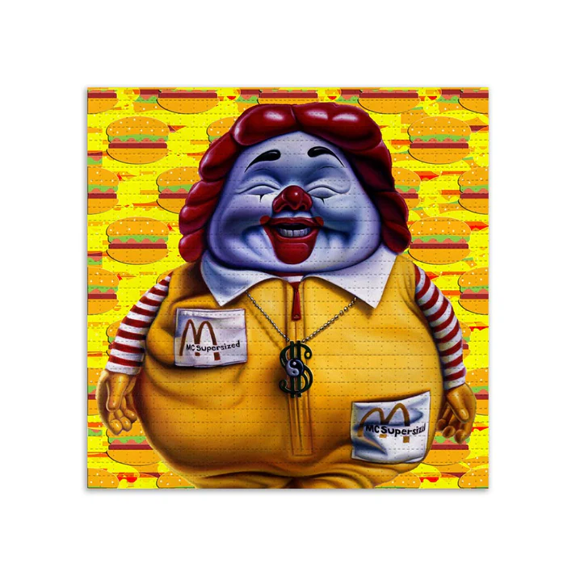
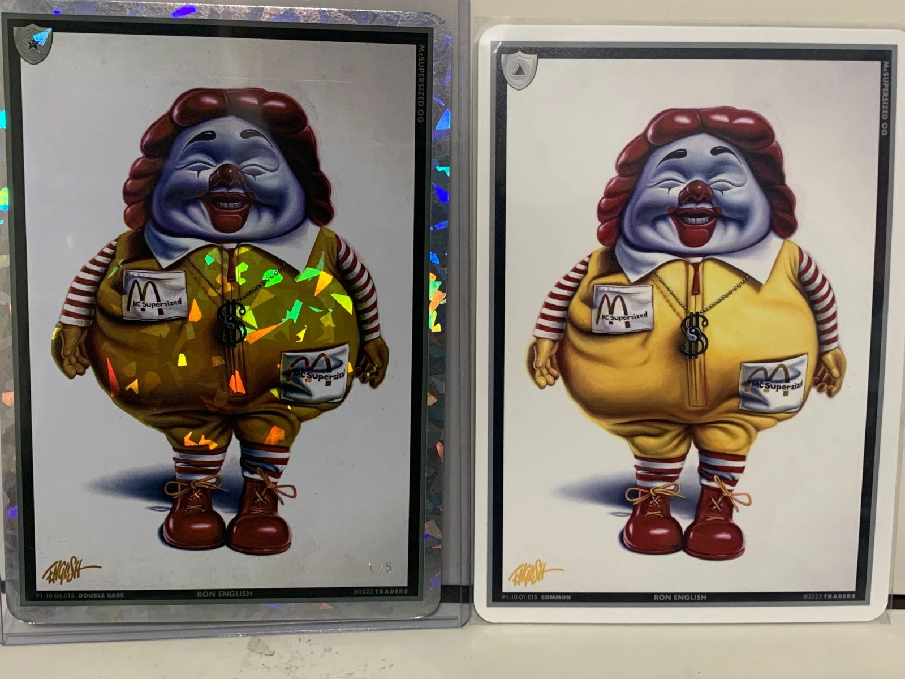
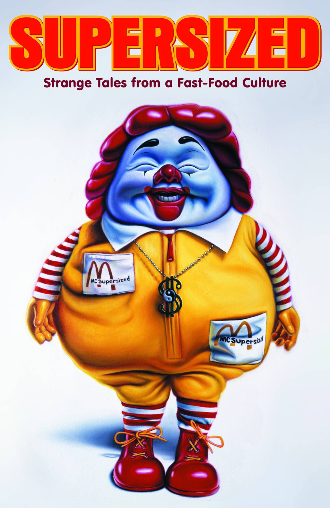

Literature
Supersized: Strange Tales from Fast Food Culture (Milwaukie, Oregon: Dark Horse Comics, n.d.), graphic novel; cover art by Ron English.
Unframed - The New Geography, “Upper Playground and Hybrid Design”.. Hybrid Design / Upper Playground, vol. 1, no. Issue 1, 2004.

Luca Ionescu, “Interview with Ron English – Feature Artist”.. Refill, no. 4, 2004.


Cotton Delo, “Pop-aganda Rocks”.. Jersey Journal, May 19, 2006.

“Super Size Me – The Ultimate Mac Attack”.. Scene Magazine, no. 540, May 25, 2004.

“Ron English”.. Refill Zero Four Magazine, vol. 4, 2010, p. 50.

David Hershkovits; (Beautiful) Paper - Beautiful People, “Get Met Or Pay - Retroactive Insurance now Available”.. (Beautiful) Paper - Beautiful People, no. 10th annual, 2007, pp. 58 - 62.

Cotton Delo, “Pop-aganda rocks”.. The Jersey Journal, May 19, 2006. Separate preserved scan.

Notes
This work was used as the cover art for the graphic novel Supersized: Strange Tales from Fast Food Culture.
This composition was later adapted by the artist as McTripping, a limited-edition blotter print released through 1XRUN on April 19, 2021.
The composition was also reproduced as a collectible trading card.
Ancillary Documentation





Selected Online Circulation
Selected examples of the work’s online circulation, reproduction, or discussion. This list is not exhaustive; it is intended to document representative appearances of the image beyond formal exhibition and publication records.